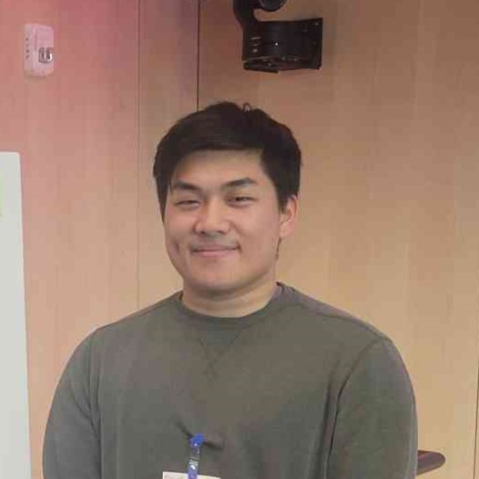

David Liu
I'm a fourth-year Ph.D. student at Boston University, advised by Professor Brian Kulis. I work on deep learning for audio and music.
In summer 2026, I was a research intern at Dolby Laboratories.

Research
My research is at the intersection of deep learning and audio processing. I'm interested in computing musical features with modern architectures and in building interpretable models for audio synthesis. I've also joined a project on AI for understanding earthquakes, where we build state-space foundation models for raw seismic waveforms.
Publications / Presentations
Interpretable Destination-Aware Synthesizer Modulation Recovery
Recovers which synthesizer parameters are modulated, the LFO shape for each one, and the oscillator waveform, so a sound can be rebuilt on a real synth. Work from my Dolby internship.
A State-Space Foundation Model for Raw Seismic Waveforms
Meter Detection: Computing Audio Features Using Mamba-Based Models
Estimating musical meter from audio with Mamba-based models.
Experience
Teaching
Teaching Fellow, CS 131 Combinatoric Structures, Boston University
Peer Mentor, Calculus and Discrete Math, University of Wisconsin–Madison